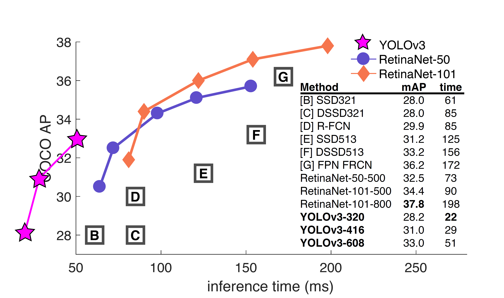
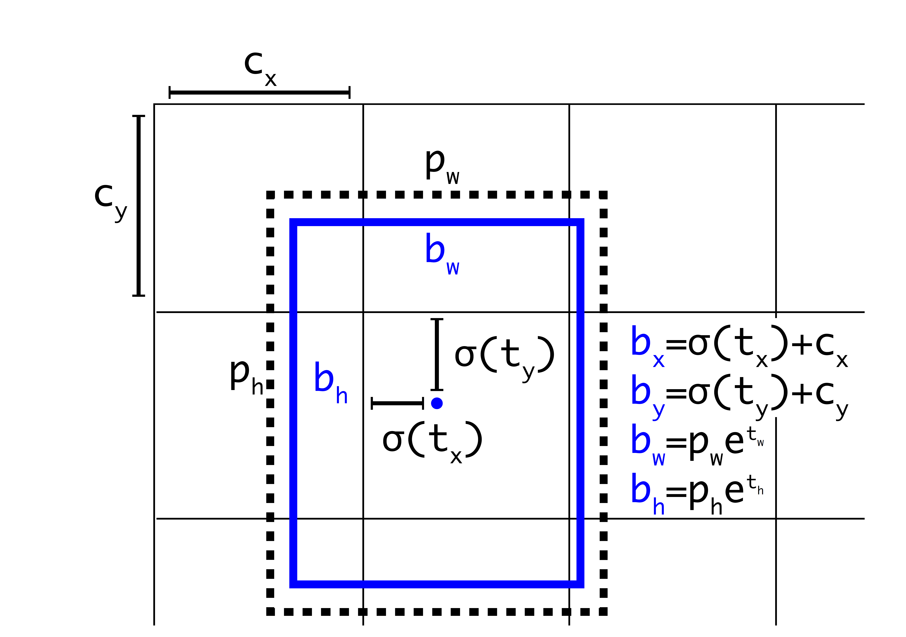

YOLOv3
原文地址 : https://arxiv.org/pdf/1804.02767v1.pdf
\(YOLOv3\) : An Incremental Improvement
\(YOLOv3\) ：增量式的改进
Joseph Redmon Ali Farhadi
University of Washington
摘要
我们对YOLO进行了一系列更新！它包含一堆小设计，可以使系统的性能得到更新。我们也训练了一个新的、比较大的神经网络。虽然比上一版更大一些，但是精度也提高了。不用担心，它的速度依然很快。 \(YOLOv3\) 在 \(320×320\) 输入图像上运行时只需 \(22ms\) ，并能达到 \(28.2mAP\) ，其精度和 \(SSD\) 相当，但速度要快上 \(3\) 倍。使用之前 \(0.5 \ IOU \ mAP\) 的检测指标， \(YOLOv3\) 的效果是相当不错。 \(YOLOv3\) 使用Titan X GPU，它在 \(51ms\) 检测精度达到 \(57.9 \ AP50\) ，然而与 \(RetinaNet\) 相比 ，其精度只有 \(57.5 \ AP50\) ，但却耗时 \(198ms\) ，相同性能的情况下 \(YOLOv3\) 速度比 \(RetinaNet\) 快 \(3.8\) 倍。与之前一样，所有代码在网址：https://pjreddie.com/yolo/。
1.引言
有时候，一年内你主要都在玩手机，你知道吗？今年我没有做很多研究。我在 \(Twitter\) 上花了很多时间,在GANs上玩了点小游戏。去年我留下了一点点的精力 [12] [1]；我设法对 \(YOLO\) 进行了一些改进。但是，实话实说，仅仅一些小的改变使得它变得更好，没有什么超级有趣的事情。我也稍微帮助了其他人的一些研究。
事实上，这就是我们今天来这里的原因。我们有一篇论文快截稿了，并且我们还缺一篇关于 \(YOLO\) 更新内容的文章作为引用，但是我们没有引用来源。所以，准备好迎接科技报道吧!
技术报告最棒的一点就是他们不需要介绍，你们都知道我们为什么在这里。因此，这篇介绍的结尾将为本文的其余部分指明方向。首先我们会告诉你 \(YOLOv3\) 的方案。其次我们会告诉你我们是如何实现的。我们也会告诉你我们尝试过但并不奏效的一些事情。最后我们将探讨这些的意义。
2.方案
这节主要介绍 \(YOLOv3\) 的更新方案：我们主要从其他人的研究工作里获得了一些好思路、好想法。我们还训练了一个新的、比其他网络更好的分类网络。为了方便理解，让我们从头开始慢慢介绍整个模型系统。

图1. 源自 \(Focal \ Loss\) 论文[9]。 \(YOLOv3\) 的运行速度明显快于其他性能相当的检测方法。检测时间基于 \(M40\) 或 \(Titan \ X\)（其中 \(M40,Titan X\) 是相似的两种 \(GPU\)）。
2.1 边界框预测
和 \(YOLO9000\) 一样，我们的系统也使用维度聚类算法生成的锚框（anchor boxes）[15] 来预测边界框。网络预测每个边界框的4个坐标：\(t_x、t_y、t_w、t_h\)。假设格子距离图像的左上角偏移量为 \((c_x，c_y)\)，且之前的边界框的宽度和高度为 \(p_w, p_h\) ，则预测结果:
在训练中我们使用误差平方和损失计算。如果某个预测坐标的 \(ground \ truth\) 是 \(\hat{t}_*\) ，那么对应的梯度就是 \(ground \ truth \ value\)（由 \(ground \ truth \ box\) 计算而得）和预测值之差：\(\hat{t}_* - t_*\)。通过变换上述公式计算,可以很容易地得到\(ground \ truth \ value\)。

图2： 维度先验和位置预测的边界框。\(\large{\sigma(t_x)}\) , \(\large{\sigma(t_y)}\) 是基于矩形框中心点左上角格点坐标的偏移量，\(\large{\sigma}\) 是激活函数，论文中作者使用sigmoid [15]。 \(\large{P_w,P_h}\) 是先验框的宽、高，通过上述公式，计算出实际预测框的宽高 。
\(YOLOv3\) 使用逻辑回归预测每个边界框是目标的分数。如果真实标签框与某个边界框重叠的面积比与其他任何边界框都大，那么这个先验边界框得分为1。按照[17]的做法，如果先验边界框不是最好的，但是确实与目标的真实标签框重叠的面积大于阈值，我们也会忽略这个预测。我们使用阈值为0.5。与[17]不同的是，我们的系统只为每个真实目标分配一个边界框。如果先验边界框未分配到真实目标，则不会产生坐标或类别预测的损失，只会产生是否是目标的损失。
2.2 分类预测
每个边界框都会使用多标签分类来预测框中可能包含的类。我们不用 \(softmax\) ，而是用单独的逻辑分类器，因为我们发现前者对于提升网络性能没什么作用。在训练过程中，我们用binary cross-entropy（二元交叉熵）损失来预测类别。
当我们转向更复杂的领域，例如 \(Open \ Images \ Dataset\) [7]，上面的这种改变将变得很有用。这个数据集中有许多重叠的标签（例如女性和人）。使用 \(softmax\) 会假定每个框只包含一个类，但通常情况并非如此。多标签的方式可以更好地对数据进行建模。
2.3 跨尺度预测
\(YOLOv3\) 在 3 种不同尺度上预测框。我们的系统使用类似特征金字塔网络的相似概念(详细可见论文：https://arxiv.org/pdf/1612.03144.pdf)，并从这些尺度中提取特征[8]。我们在基础特征提取器上添加了几个卷积层。其中最后一个卷积层 预测了一个编码边界框、是否是目标和类别预测结果 的三维张量。在 \(COCO\) 数据集上实验[8]中，我们为每个尺度预测3个框，对于每个边界框有 4个偏移量、1个目标预测和80个类别预测，最终的张量大小为 \(N×N×[3×(4+1+80)]\)。
接下来，我们从前面的2个层中提取特征图，并将其上采样2倍。我们还从网络中的较前的层中获取一个特征图，并将其与我们的上采样特征图进行拼接。这种方法使我们能够从上采样的特征图中获得更有意义的语义信息，同时可以从更前的层中获取更细粒度的信息。然后，我们添加几个卷积层来处理这个特征映射组合，并最终预测出一个相似的、大小是原先两倍的张量。
我们再次使用相同的设计来预测最终尺寸的边界框。因此，第三个尺寸的预测将既能从所有先前的计算，又能从网络前面的层中的细粒度的特征中获益。
我们仍然使用k-means聚类算法来确定我们的先验边界框。我们只是选择了9个聚类(clusters)和3个任意的尺度(scales arbitrarily)， 然后在尺度上将聚类均匀地划分聚类。 在 \(COCO\) 数据集上，9个聚类分别 为 \((10×13)、(16×30)、(33×23)、(30×61)、(62×45)、(59×119)、(116 × 90)、(156 × 198)、(373 × 326)\) 。
2.4 特征提取器
我们使用一个新的网络来进行特征提取。我们的新网络融合了 \(YOLOv2、Darknet-19\) 和新发明的残差网络的思想。我们的网络使用连续的 \(3×3\) 和 \(1×1\) 卷积层和添加了一些快捷连接（shortcut connetction），从而规模更大，目前它有53个卷积层，所以我们称之为... \(Darknet-53!\)

表1. Darknet-53.
我们的网络在性能上远超Darknet-19，在效率上也优于ResNet-101和ResNet-152。这里是一些网络在ImageNet上的实验结果：
表2.网络的比较。不同backbones的各种网络在准确度、Bn Ops（十亿操作数）、BFLOP/s（每秒十亿浮点操作）和FPS上的比较。
每个网络都在相同的配置下进行训练，均用 \(256 ×256\) 的图片上进行单精度测试。运行时间通过在 \(Titan \ X\) 上处理 \(256 × 256\) 图片测出。从表2可以看出，\(Darknet-53\) 不仅精度可以媲美最先进的分类器，而且它有较少浮点运算操作，更快的速度。\(Darknet-53\) 比 \(ResNet-101\) 性能更好而且要快1.5倍。\(Darknet-53\) 性能与 \(ResNet-152\) 相近，但是要比它快2倍。
\(Darknet-53\) 也实现了最高的每秒浮点运算测量。这意味着网络结构可以更好地利用GPU，使其预测效率更高，速度更快。ResNets更慢，大抵是因为其层数太多，所以不是那么有效率。
2.5 训练
我们依旧只是训练完整的图像，没有将难以正确分类的样本反复训练，也没有进行其他任何操作。我们使用多尺度训练，使用大量的数据增强、批量标准化等标准的操作。我们使用 \(Darknet\) 神经网络框架进行训练和测试[12]。
\(YOLOv3\) is pretty good! See table 3. In terms of COCOs weird average mean AP metric it is on par with the SSD variants but is 3× faster. It is still quite a bit behind other models like RetinaNet in this metric though.
Table 3. I’m seriously just stealing all these tables from [9] they take soooo long to make from scratch. Ok, \(YOLOv3\) is doing alright. Keep in mind that RetinaNet has like 3.8× longer to process an image. \(YOLOv3\) is much better than SSD variants and comparable to state-of-the-art models on the AP50 metric.
3 我们是如何做的
\(YOLOv3\) 表现非常好！请看表3。就COCO的平均AP指标而言，它与SSD类的模型相当，但速度提高了3倍。尽管如此，它仍然在这个指标上比像RetinaNet这样的其他模型差些。

表3.我很认真地从[9]中 \(“窃取”\)了他们花了很长时间才从头开始制作这些表格。好的， \(YOLOv3\) 没问题。请记住，\(RetinaNet\) 处理一张图像的时间是 \(YOLOv3\) 的 \(3.8\) 倍。 \(YOLOv3\) 比 \(SSD\) 要好得多，并且在 \(AP50\) 标准下可以与最先进的模型媲美！
然而，当我们使用 \(“旧的”\) 检测指标——在 \(IOU=0.5的mAP\) （或图表中的\(AP50\)）时， \(YOLOv3\) 非常强大。其性能几乎与RetinaNet相当，并且远强于 \(SSD\) 。这表明 \(YOLOv3\) 是一个非常强大的检测器，擅长为目标生成恰当的框。然而，随着 \(IOU\) 阈值增加，性能显著下降，这表明 \(YOLOv3\) 预测的边界框与目标不能完美对齐。

Figure 3. Again adapted from the [9], this time displaying speed/accuracy tradeoff on the mAP at .5 IOU metric. You can tell \(YOLOv3\) is good because it’s very high and far to the left. Can you cite your own paper? Guess who’s going to try, this guy ! [16]. Oh, I forgot, we also fix a data loading bug in YOLOv2, that helped by like 2 mAP. Just sneaking this in here to not throw off layout.
图3. 再次改编自[9]，这次显示的是在 \(0.5 \ IOU\) 指标上速度/准确度的权衡。你可以说 \(YOLOv3\) 是好的，因为它非常高并且在左边很远。 你能引用你自己的论文吗？猜猜谁会去尝试，这个人→[16]。哦，我忘了，我们还修复了YOLOv2中的数据加载bug，该bug的修复提升了2 mAP, 只是在这里偷偷提一下，这不是重点。
在之前的 \(YOLO\) 不擅长检测小物体。但是，现在我们看到了这种趋势的逆转。随着新的多尺度预测，我们看到 \(YOLOv3\) 具有相对较高的 \(APS\) 性能。但是，它在中型和大型物体检测上的性能还相对较差。这可能需要更多的调研和实验才能知道如何去改进这一点。
当我们在 \(AP50\) 指标上绘制准确度和速度关系图时（请见图3），我们看到 \(YOLOv3\) 与其他检测系统相比具有显着的优势。也就是说 \(YOLOv3\) ，速度更快、性能更好。
4 失败的尝试
我们在实现 \(YOLOv3\) 的过程中尝试了很多东西，但是很多都失败了，以下是我们还记得的一些失败的尝试。
Anchor框的x、y偏移预测。我们尝试使用常规的Anchor框预测机制，比如利用线性激活将坐标x、y的偏移程度预测为边界框宽度或高度的倍数。但我们发现这种方法降低了模型的稳定性，并且效果不佳。
用线性激活代替逻辑激活函数进行x、y预测。我们尝试使用线性激活代替逻辑激活来直接预测x、y偏移。这个改变导致mAP下降了几个点。
focal loss。我们尝试使用focal loss。它使得mAP下降2个点。 \(YOLOv3\) 可能已经对focal loss 试图解决的问题具有相当的鲁棒性，因为它具有单独的目标预测和条件类别预测。因此，对于大多数样本来说，类别预测没有损失？或者有一些？我们并不完全确定。
双IOU阈值和真值分配。 \(Faster \ R-CNN\) 在训练期间使用两个 \(IOU\) 阈值。如果一个预测与真实标签框重叠超过 \(0.7\) ，它就是一个正样本，若重叠在 \([0.3，0.7]\) 之间，那么它会被忽略，若它与所有的真实标签框的 \(IOU\) 小于0.3，那么就会被判定为一个负样本。我们尝试了类似的策略，但最终的效果并不好。
我们非常喜欢目前的模型，它至少在局部达到了最佳。上述的有些技术可能会使我们的模型更好，但我们可能还需要对他们做一些调整。
5 这一切意味着什么
\(YOLOv3\) 是一个很棒的检测器，它由准又快。虽然它在 \(COCO\) 数据集上，0.3和0.95 IOU 下的平均AP并不好，但在旧的 0.5 IOU的检测指标下，它还是非常不错的。
为什么我们要改变指标？ \(COCO\) 的原论文有这样一句含糊不清的句子：\(“A \ full \ discussion \ of \ evaluation \ metrics \ will \ be \ added \ once \ the \ evaluation \ server \ is \ complete”\) 。Russakovsky等人的报告中说，人们很难区分0.3和0.5的IOU。“训练人类用视觉检查0.3 IOU的边界框，并且与0.5 IOU的框区别开来是非常困难的。“[16]如果人类很难说出差异，那么它也没有多重要吧？
也许有个更好的问题值得我们探讨“我们用它来干什么”许多从事这项研究的人都在Google和Facebook，我想至少我们知道这个技术是掌握在好人手里，绝对不会把它用来收集你的个人信息然后卖给……等等，你究竟想用它来干嘛！！噢。
其他花大钱资助视觉研究的人还有军方，他们从来没有做过任何可怕的事情，例如用新技术杀死很多人，等等.....
我强烈地希望，大多数使用计算机视觉的人都用它来做一些快乐且有益的事情，比如计算一个国家公园里斑马的数量[13]，或者追踪在附近徘徊的猫[19]。但计算机视觉已经被用于值得怀疑的用途，作为研究人员，我们有责任考虑我们的工作可能造成的损害，并思考如何减轻它的影响。我们欠这个世界太多。
最后，不要再@我了。（因为我已经退出Twitter这个是非之地了）。
In closing, do not@me. (Because I finally quit Twitter).
References
- [1] Analogy. Wikipedia, Mar 2018. 1
- [2] M. Everingham, L. V an Gool, C. K. Williams, J. Winn, and A. Zisserman. The pascal visual object classes (voc) challenge. International journal of computer vision, 88(2):303– 338, 2010. 6
- [3] C.-Y . Fu, W. Liu, A. Ranga, A. Tyagi, and A. C. Berg. Dssd: Deconvolutional single shot detector. arXiv preprint arXiv:1701.06659, 2017. 3
- [4] D. Gordon, A. Kembhavi, M. Rastegari, J. Redmon, D. Fox, and A. Farhadi. Iqa: Visual question answering in interactive environments. arXiv preprint arXiv:1712.03316, 2017. 1
- [5] K. He, X. Zhang, S. Ren, and J. Sun. Deep residual learning for image recognition. In Proceedings of the IEEE conference on computer vision and pattern recognition, pages 770–778, 2016. 3
- [6] J. Huang, V . Rathod, C. Sun, M. Zhu, A. Korattikara, A. Fathi, I. Fischer, Z. Wojna, Y . Song, S. Guadarrama, et al Speed/accuracy trade-offs for modern convolutional object detectors. 3
- [7] I. Krasin, T. Duerig, N. Alldrin, V . Ferrari, S. Abu-El-Haija, A. Kuznetsova, H. Rom, J. Uijlings, S. Popov, A. V eit, S. Belongie, V . Gomes, A. Gupta, C. Sun, G. Chechik, D. Cai, Z. Feng, D. Narayanan, and K. Murphy. Openimages: A public dataset for large-scale multi-label and multi-class image classification. Dataset available from https://github.com/openimages, 2017. 2
- [8] T.-Y . Lin, P . Dollar, R. Girshick, K. He, B. Hariharan, and S. Belongie. Feature pyramid networks for object detection. In Proceedings of the IEEE Conference on Computer Vision and Pattern Recognition, pages 2117–2125, 2017. 2, 3
- [9] T.-Y . Lin, P . Goyal, R. Girshick, K. He, and P . Dollár. Focal loss for dense object detection. arXiv preprint arXiv:1708.02002, 2017. 1, 3, 4
- [10] T.-Y . Lin, M. Maire, S. Belongie, J. Hays, P . Perona, D. Ramanan, P . Dollár, and C. L. Zitnick. Microsoft coco: Common objects in context. In European conference on computer vision, pages 740–755. Springer, 2014. 2
- [11] W. Liu, D. Anguelov, D. Erhan, C. Szegedy, S. Reed, C.Y . Fu, and A. C. Berg. Ssd: Single shot multibox detector. In European conference on computer vision, pages 21–37. Springer, 2016. 3
- [12] I. Newton. Philosophiae naturalis principia mathematica. William Dawson & Sons Ltd., London, 1687. 1
- [13] J. Parham, J. Crall, C. Stewart, T. Berger-Wolf, and D. Rubenstein. Animal population censusing at scale with citizen science and photographic identification. 2017. 4
- [14] J. Redmon. Darknet: Open source neural networks in c. http://pjreddie.com/darknet/, 2013–2016. 3
- [15] J. Redmon and A. Farhadi. Y olo9000: Better, faster, stronger. In Computer Vision and Pattern Recognition (CVPR), 2017 IEEE Conference on, pages 6517–6525. IEEE, 2017. 1, 2, 3
- [16] J. Redmon and A. Farhadi. Y olov3: An incremental improvement. arXiv, 2018. 4
- [17] S. Ren, K. He, R. Girshick, and J. Sun. Faster r-cnn: Towards real-time object detection with region proposal networks. arXiv preprint arXiv:1506.01497, 2015. 2
- [18] O. Russakovsky, L.-J. Li, and L. Fei-Fei. Best of both worlds: human-machine collaboration for object annotation. In Proceedings of the IEEE Conference on Computer Vision and Pattern Recognition, pages 2121–2131, 2015. 4
- [19] M. Scott. Smart camera gimbal bot scanlime:027, Dec 2017. 4
- [20] A. Shrivastava, R. Sukthankar, J. Malik, and A. Gupta. Be- yond skip connections: Top-down modulation for object de- tection. arXiv preprint arXiv:1612.06851, 2016. 3
- [21] C. Szegedy, S. Ioffe, V . V anhoucke, and A. A. Alemi. Inception-v4, inception-resnet and the impact of residual connections on learning. 2017. 3